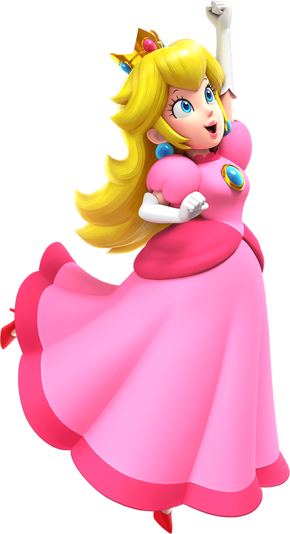

Mario
El protagonista. Un plomero valiente que siempre rescata a la Princesa Peach.

Luigi
El hermano de Mario. Más alto y tímido, pero igual de héroe.

Princesa Peach
La princesa del Reino Champiñón, amable y valiente.
Bowser
El villano principal. Siempre intenta secuestrar a Peach.
Toad
Habitante del Reino Champiñón. Leal aliado de Mario y Peach.

Yoshi
Dinosaurio verde amigo de Mario. Puede comer enemigos y saltar alto.